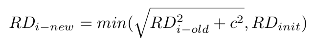
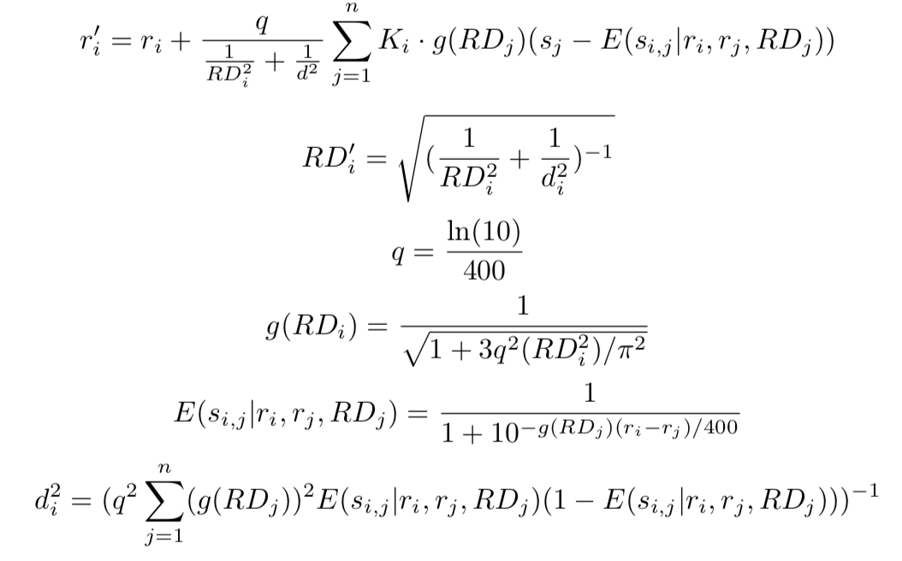
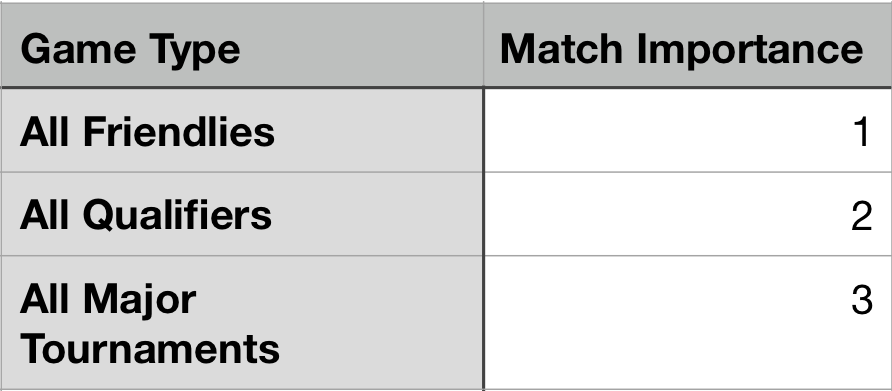
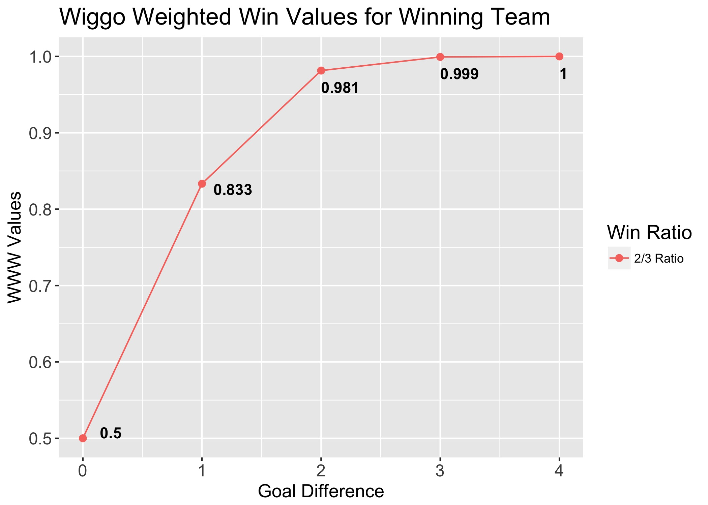
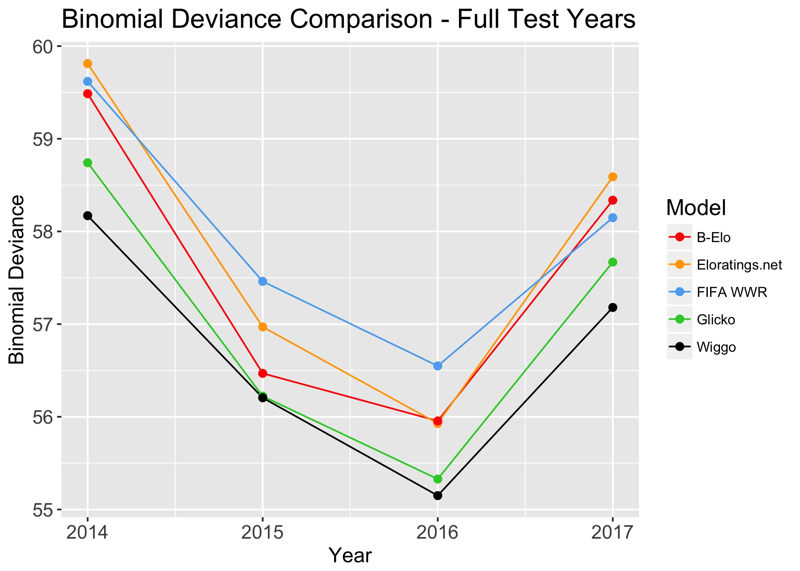
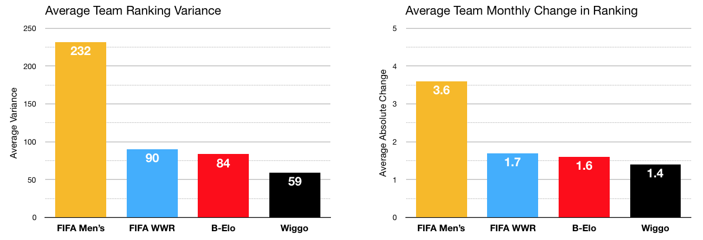
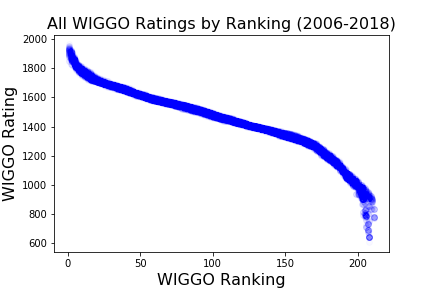
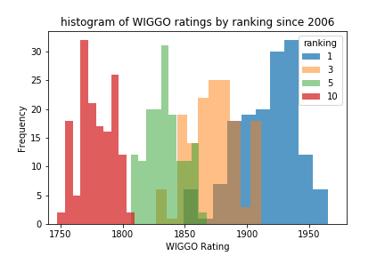
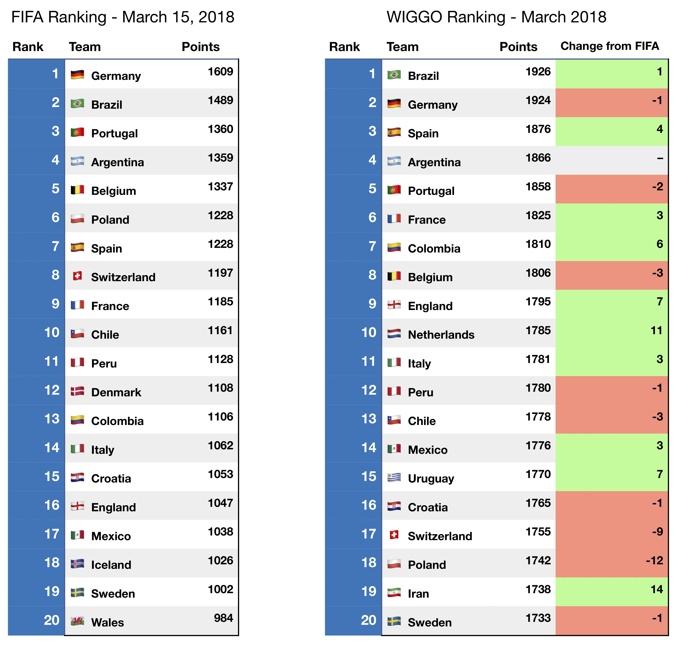

Weighted Importance and Goal-Adjusted GlickO (WIGGO)
Outline
Overview
WIGGO (Weighted Importance & Goal-adjusted GlickO) is a Glicko-based rating system for international football teams developed to find a more mathematically robust and predictive alternative to the official FIFA Ranking. Glicko is a rating algorithm that considers both a team’s strength (their rating) and the uncertainty around a team’s strength (their rating deviation) to calculate the probability that it will win a match against a certain opponent. When a team overperforms their win probability, their rating increases, and when they underperform, their rating decreases. The more games a team plays, the smaller their uncertainty rating, and the longer a team goes without a game, the larger their uncertainty rating. The inclusion of rating deviation serves to model the inherent uncertainty that exists around teams’ strengths in international football, given that teams only play a handful of games a year and each of them with potentially very different rosters. Both the ratings and the rating deviations are updated periodically; in WIGGO’s case, the update happens monthly.
Math
The implementation of the WIGGO follows the two-step procedure outlined below:
-
Inflation of the Rating Deviance (RD): At the end of each monthly period, we inflate every team’s deviance to account for the fact that we are less certain of a team’s true strength as time passes. This is done with the following equation, with a cross-validated value of c = 8 and an initial value of RD = 350:
 -
Update of the Rating (r) and Rating Deviance: After each monthly period, we incorporate each team’s performances relative to expectations into their new rating and update a team’s rating deviance based on how confident those results make us of the accuracy of their strength. In the formula below ri is the rating for team i, E(si,j|ri ,rj, RDj) is the expected outcome of a game for team i playing against team j, and si, j the outcome of team i playing against team j:

For a more in-depth look at the math behind WIGGO, here’s the link to the working paper on the Glicko system: WIGGO Working Paper
There are two adjustments that WIGGO makes over the traditional Glicko system. The first is the incorporation of a Ki value as a way to account for match importance. WIGGO assigns games an importance weight one of three ways, shown in the table below:
The second adjustment is in the calculation of actual game outcomes. Rather than mapping results to 0 (loss), 0.5 (draw), and 1 (win), WIGGO takes into account the goal difference of each match to determine how much each result was “worth” to each team. Each additional goal awards the winning team two thirds of the points between its previous win value and 1. Under this system, draws are still worth 0.5 to both teams, but a one-goal win is only worth 0.833 to the winning team and it is worth 0.167 to the losing team. The ratio of two thirds was found via cross-validation.
Performance
Lasek et al.’s “The predictive power of ranking systems in association football” (2013) is perhaps the most relevant research on the subject of men’s international football rankings. Their results showed that the FIFA Ranking is not particularly suited to predicting win probabilities and identified instead a variant of the Elo model currently in use for the FIFA Women’s World Ranking (FIFA WWR) and another used by the website Eloratings.net as the strongest-performing individual ranking methods available.
WIGGO was tested directly against the two top-performing models in the Lasek paper, as well as a standard Glicko model and a third Elo-based model, on the error functions of Binomial Deviance and MSE. In every full test year in our sample, WIGGO outperformed every other model.
Additionally, WIGGO proved to be the most stable ranking model in the sample, with the lowest average ranking variance and the lowest average change in ranking across all teams.
Examples
WIGGO Rankings and Ratings are strongly related by what appears to be an odd polynomial relationship. The strength of the relationship means that if we were missing a team’s Ranking, we would be able to infer it from the Rating, and vice versa.
Another good visualization of how WIGGO Ratings work is showing how the Rating for each Ranking position is normally distributed with different means and similar variances. The distributions of each Ranking is distinct from the others.
Finally, maybe the best way to understand WIGGO Rankings is to compare them directly to their FIFA equivalents. The tables below show the March rankings top-20 for both models.
